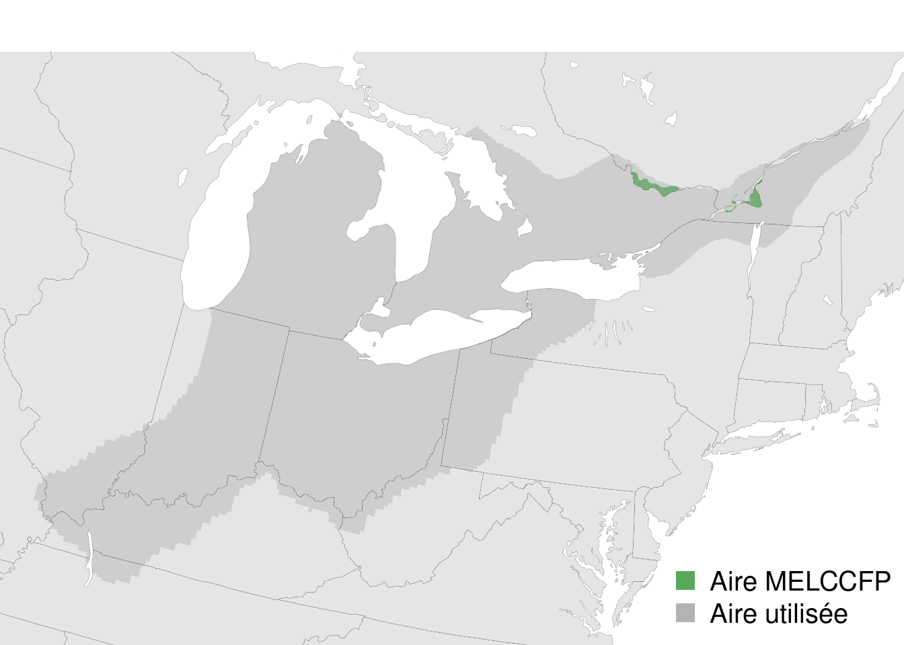

2 Occurrences
Les données d’observations utilisées pour le Québec proviennent de la base de données Atlas de Biodiversité Québec (ficher parquet version 2025-03-17). Ces données incluent notamment les données du Centre de données sur le patrimoine naturel du Québec (CDPNQ), les données de la Banque d’observations des reptiles et amphibiens du Québec (BORAQ) (Ministère de l’Environnement, de la Lutte contre les changements climatiques, de la Faune et des Parcs (MELCCFP), © Gouvernement du Québec 2025b), les données GBIF (GBIF.org 2025), les données eBird (Cornell Lab of Ornithology 2025), EPOQ (Études des populations d’oiseaux du Québec) [] et des deux Atlas des oiseaux nicheurs (Robert et al. 2019) et les données de l’Atlas des micromammifères et des chiroptères du Québec (Ministère de l’Environnement, de la Lutte contre les changements climatiques, de la Faune et des Parcs (MELCCFP), © Gouvernement du Québec 2025a).
Afin de construire les niches climatiques sur la majorité de l’aire de répartition des espèces, les observations des différentes espèces en Amérique du Nord (Canada et États-Unis) ont également été utilisées. Pour ce faire, les données GBIF hors-Québec (GBIF.org 2025) ont été utilisées pour l’ensemble des espèces, sauf les oiseaux. Pour les oiseaux, l’ensemble de données eBird Basic Dataset (EBD) (Cornell Lab of Ornithology 2025) a été utilisé afin d’accéder à l’information sur les feuillets d’observations et ainsi faciliter une estimation de l’effort. Le jeu de données eBird Observational Dataset (EOD) (Jasdev Imani et al. 2025) disponible par GBIF et intégré à Atlas a été éliminé.
2.1 Filtrage des occurrences
Une inspection préalable des observations a été effectuée en amont de la modélisation afin d’identifier et d’éliminer les observations suspectes, douteuses ou erronées. Les observations acoustiques incertaines du Petit Polatouche à Mingan ont été éliminées. Une aire de répartition a été utilisée pour circonscrire les observations appartenant à la rainette faux-grillon de l’Ouest telle que définie au Québec (Équipe de rétablissement de la rainette faux-grillon de l’ouest du Québec 2019). Pour ce faire, les aires de répartition de la rainette faux-grillon boréale (Pseudacris maculata) et de la rainette faux-grillon de l’Ouest telle que représentées sur la plateforme iNaturalist ont été combinées pour circonscrire les populations du nord-est des USA et du sud du Québec (Figure 2.1).